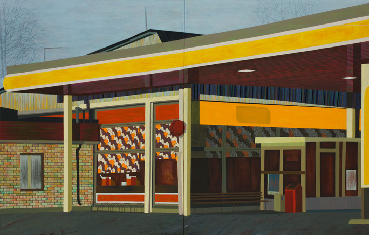
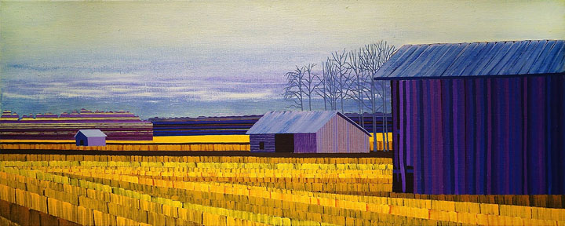

TEOKSET
- 
- 
×

Elina Försti on pohjalainen taidemaalari, kuka innostuu pohjalaisesta maisemasta. Hän on tehnyt paljon pohjalaisista ladoista tauluja ja niillä niittänyt hyvää mainetta taitelijapiireissä. Latojen lisäksi häntä kiinnostavat myös riihet ja jopa vanhat huoltoasemat. Vaikka ladot ovat varsin saman näköisiä, niin kaikissa taiteilija näkee jotain persoonallista.
Hän on syntynyt 12.02.1971 Evijärvellä, Etelä-Pohjanmaalla.
Elina Försti asuu ja työskentelee Alajärvellä. Försti valmistui Helsingin Vapaasta Taidekoulusta vuonna 2000 maalaustaiteen tutkinnosta. Hänen teoksiaan on ollut esillä useissa näyttelyissä Suomessa ja ulkomailla vuodesta 1998 lähtien. Osa Förstin teoksista löytyy seuraavista taidekokoelmista: Valtion taidevarasto, Paulon säätiön taidekokoelma, Nelimarkan museo, Suomen taidekokoelmat. Alajärven, Kannuksen, Seinäjoen ja Vaasan kaupungit sekä HUS:n kuntaliitosalue. Viime vuosina Försti on viettänyt lyhyitä aikoja erilaisissa symposiumeissa ja vieraillut residenssissä Suomessa ja ulkomailla. Försti työskentelee ajoittain tuntemattomissa paikoissa keskittyen yhteen tai kahteen aiheeseen kerrallaan ja hän tekee lukuisia värikokeita eri vuorokaudenaikoina. Näistä symposiumeissa ja asunnoissa luomista luonnoksista tulee lopulta hänen maalaustensa aiheita.
Elina Färsti maalaa upeita kuvia, joissa hän tutkii valoa, värejä ja tilaa keskittyen Etelä-Pohjanmaan ladoihin ja muihin paikallisiin rakennuksiin ja maisemiin, joita hän pitää mielenkiintoisina. Förstiä kiinnostavat erityisesti öljymaalin mahdollisuudet maalausmateriaalina. Försti on tiettyihin paikkoihin sitoutunut taiteilija, joka saa inspiraationsa taiteeseensa asuinalueelta. Hänen maalauksensa kertovat tarinan ajan kulumisesta, rappeutuneista rakennuksista sekä katoamisista ja muutoksista, joita ympärillämme tapahtuu jokapäiväisessä elämässämme.
Elina Försti on upea moderni suomalainen taiteilija. Hänen kuvat eivät ole vain kauniita ja hyvännäköisiä. Hän tekee todellista taidetta, koska hän yhdistää todellisuuden mielikuvitukseen: aidot suomalaiset maisemat ja arkkitehtuuri moderneihin kirkkaisiin, melkein neonväreihin. Kuvillaan Elina Försti kehittää ja populisoi suomalaista kulttuuria paitsi Suomessa, myös muissa maissa. Samaan aikaan Elina Förti on loistava esimerkki suomalaisesta naisesta, joka muuttaa sanan parempaan ja myötävaikuttaa sukupuolten tasa-arvon kehittämiseen nyky-yhteiskunnassa.